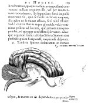

René Descartes, De homine. Figuris et Latinitate donatus a Florentio Schuyl. Lugduni Batavorum, apud Petrum Leffen et Franciscum Moyardum, 1662. -- (519 F 3:1)
Het oeuvre van de Franse filosoof René Descartes (1596-1650) wordt beheerst door een sterk rationalisme. Hiertoe was hij al vroeg gekomen, toen hij zich twee belangrijke conclusies eigen had gemaakt: de wiskunde levert een werkwijze die ook op de andere exacte vakken toepasbaar is, en er bestaat een eenheid van en samenhang tussen alle menselijke kennis.
Aanvankelijk zal Descartes zich eerder natuurwetenschapper dan filosoof gevoeld hebben en dat blijkt nadrukkelijk uit zijn werken. De Discours de la méthode, het in 1637 verschenen boek van het 'Cogito ergo sum' (Ik denk, dus ik besta), bevat, zeker in Descartes' ogen, in eerste instantie natuurwetenschappelijke studies, en wel over optica, meteoren en meetkunde, hoewel het boek beroemd zou worden door de inleiding, waarin Descartes de door hem gevolgde werkwijze uiteenzet.
Al eerder, niet zo lang na 1630, had Descartes zijn principes gevolgd in een werk, getiteld: Traité de l'homme. Geschrokken door de veroordeling van Galilei door het Heilig Officie in 1633, heeft hij, die tevens een oprecht gelovig mens was, dat boek toen niet willen (of durven) publiceren, omdat hij heel goed inzag, hoezeer de rationalistische, ja zelfs mechanischtische, opvattingen die hij erin verkondigde, strijdig waren met de leer van de rooms-katholieke kerk. Descartes was sterk beïnvloed door William Harvey, wiens ontdekking van de grote bloedsomloop in 1628 was gepubliceerd. Hierop aansluitend beschreef Descartes het lichaam als een machine -- hij gebruikt het woord ‘machina’ al in de tweede paragraaf van zijn boek: weliswaar een ‘aardse’ machine, die echter bestuurd wordt door een rationele ziel. Wellicht op grond van deze overtuiging durfde hij Harvey niet tot het laatste te volgen, namelijk dat het bloed in beweging wordt gehouden door de samentrekking van het hart. (Descartes bleef in dit opzicht een aanhanger van de theorieën van Galenus, namelijk dat verhitting de oorzaak van de stroming van het bloed is.) De werkelijke oorzaak van de bloedsomloop interesseerde hem trouwens niet echt. Dat was veeleer het zenuwstelsel, en in het bijzonder de hersenen en de werking daarvan, waarvoor het bloed slechts de voedende stoffen aanbracht. De zenuwen verklaarde hij puur fysiologisch als een stelsel van buisjes, waardoorheen een soort ‘lucht’ loopt, die vanuit de hersenen via klepjes naar de spieren wordt gestuurd. Daar ontstaat dan een opzwelling, die verantwoordelijk is voor het in werking komen van het desbetreffende lichaamsdeel, zodat alle soorten handelingen tot stand konden komen. (Deze theorie zou overigens door Govard Bidloo (zie nummer 77) afdoende weerlegd worden.) Tevens heeft Descartes de onwillekeurige spierbeweging, de reflex, als eerste beschreven.
Nadat het Traité de l’homme door Florentius Schuyl uit het Frans in het Latijn was vertaald en van de noodzakelijke tekstfiguren voorzien, verscheen het in 1662, zo’n dertig jaar na zijn ontstaan. Het behield als eerste ‘studieboek’ op het gebied van de fysiologie tot in de eerste helft van de achttiende eeuw een zekere invloed. De getoonde afbeelding is een weergave van de boven beschreven mechanistische methode, volgens welke het zien tot stand komt door de inschakeling van het oog en de oogzenuw met behulp van de hersenen.
Literatuur
- M. Foster, Lectures on the history of physiology during the sixteenth, seventeenth and eighteenth centuries. Cambridge 1901, p. 57-61, 260-269.
| vorige pagina | top pagina |